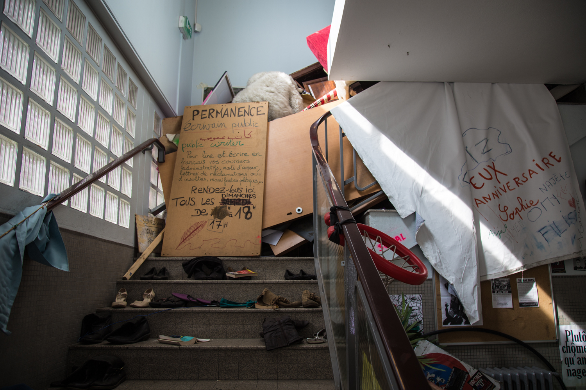
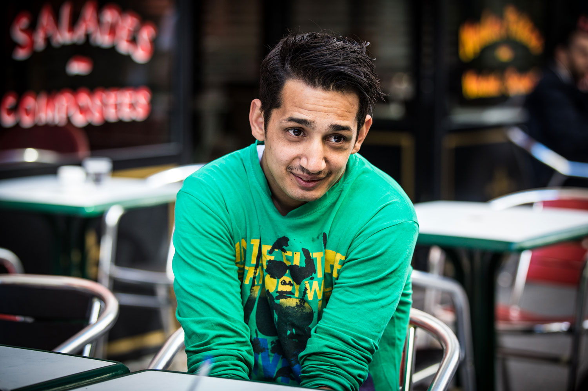
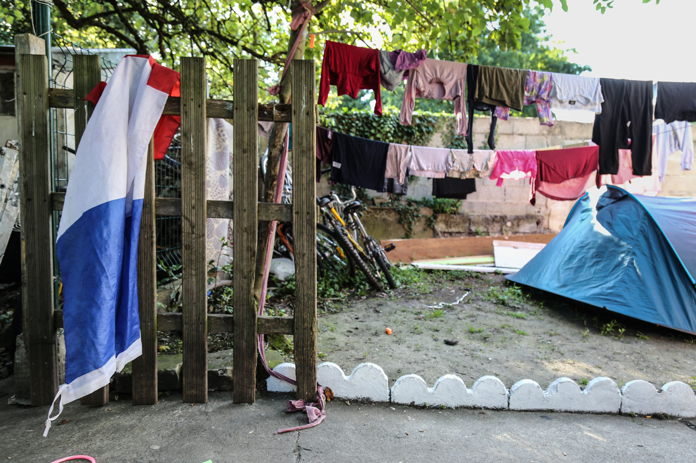

Darius et sa chambre - Squat Attiéké
À 24 ans, Darius est aussi généreux que canaille. Des galères ordinaires aux violences quotidiennes, des squats de Saint-Denis aux clubs des Champs-Élysées, portrait de ce jeune immigré roumain qui se joue de la loi au service des autres
Ce jeudi 7 juillet 2016 à 9 h 23, la salle d’audience du tribunal d’instance de Saint-Denis est pleine à craquer. Militants, gens du quartier, habitants de l’Attiéké ou d’autres squats, ils se sont tous rassemblés devant la petite entrée du tribunal. Discrètement, Darius vagabonde d’un groupe à l’autre, salue les uns, embrasse les autres. Il s’installe au fond de la salle, silencieux. On le remarque à peine dans le brouhaha ambiant. La greffière demande le calme à plusieurs reprises. « Tu es stressé ? — Un peu, oui. Surtout si je dois témoigner ». Dans quelques minutes, il se retrouvera devant la juge en tant que prévenu, accompagné de deux autres représentantes du centre. L’expulsion des squatteurs est en jeu. Mais l’audience est vite terminée : l’avocate assignée au cas de l’Attiéké a laissé une lettre au tribunal pour prévenir de son retrait. La juge renvoie l’affaire, prochaine audience prévue le 24 octobre 2016.
Le regard tendre, un peu timide, Darius intrigue. Souvent à l’écart, il n’a rien de grandiloquent. Il n’est pas leader ni maître à penser. Pourtant, à la sortie de la salle d’audience, tout le monde l’applaudit, le prend dans ses bras. Très vite, il s’éloigne de l’agitation. Un chat n’aime jamais trop le bruit, solitaire au milieu du monde. Et Darius a sans doute un peu de ça en lui. Celui qui raconte avoir échappé plusieurs fois à la mort se relève pour mieux élever les autres, apprend les lois pour mieux les contourner.
Le regard tendre, un peu timide, Darius intrigue. Souvent à l’écart, il n’a rien de grandiloquent. Il n’est pas leader ni maître à penser. Pourtant, à la sortie de la salle d’audience, tout le monde l’applaudit, le prend dans ses bras. Très vite, il s’éloigne de l’agitation. Un chat n’aime jamais trop le bruit, solitaire au milieu du monde. Et Darius a sans doute un peu de ça en lui. Il échappe plusieurs fois à la mort, se relève pour mieux élever les autres, apprend les lois pour mieux les déjouer.
Il y a trois ans, il a ouvert, avec d’autres, le centre de l’Attiéké de Saint-Denis. Un refuge pour la quarantaine de personnes qui peuvent y résider. Le jeune homme vit discrètement avec eux. Dans les anciens locaux de l’Assurance Maladie, rachetés par la Fédération française de triathlon, ils défilent : migrants, sans-papiers, chômeurs… Ils s’organisent à leur façon, « s’autogèrent » comme ils aiment à le préciser. On oublie presque que Darius est à l’origine de ce lieu. Sur les murs de la salle commune, des affiches dans tous les sens, des brochures de journaux, des agendas en pagaille : « Police go home ! », « cours d’autodéfense pour les dyonisiennes », « dimanche 3 juillet : formation ouverture de squat »... Un peu à l’écart, entre les escaliers du sous-sol et les toilettes du rez-de-chaussée, Darius ouvre une porte taguée et nous invite dans sa chambre.
Accès bloqué pour la tranquillité des résidents - Squat Attiéké
Les épaules rentrées, il s’assoit sur son lit. Avec son t-shirt vert bariolé et sa moustache naissante, il ferait presque adolescent. Les posters qui couvrent les murs gris de sa chambre rappellent les goûts kitsch de la jeunesse 90’ s. À coups d’Avril Lavigne et Vampire Diaries. Eminem pour les meilleurs. Sur le bureau bancal à côté du lit, un petit écran diffuse des images de shows américains en silence. « J’adore les séries. Game of Thrones, Contamination, Walking Dead… ». On pense à un jeunot ordinaire, un peu perdu, pas trop sérieux.
On soupçonne à peine ses faits d’armes, ses actions, ses magouilles aussi.
En août 2015, le plus ancien bidonville de France, à La Courneuve, est détruit. Près de 200 personnes sont expulsées. Quelques solutions de relogement sont proposées. Ce n’est pas assez : 84 familles dorment dans des tentes devant la mairie. Darius épaule La voix des Rroms, une association antiraciste créée en 2005, qui œuvre pour leur reconnaissance en France. Des couvertures sont apportées, des logements illégaux proposés. Aux côtés de Médecins du Monde et de la Fondation Abbé Pierre, il traduit parfois les échanges. En 2014, déjà, il aidait 4 familles d’Afrique de l’Ouest à Anthony. Débrouillard, il apprend vite les lois françaises et sait négocier finement : les familles ont pu rester trois années supplémentaires dans le squat à condition que les enfants soient scolarisés et qu’au moins l’un des conjoints travaille.
De l’officiel à l’officieux, la frontière est mince. Un chat de gouttière. Il n’est d’ailleurs pas mieux logé que ceux qu’il aide. Le jour, il prête main-forte aux défavorisés. La nuit, il est gogo-dancer pour la jet-set parisienne dans un club des Champs Élysées. Face à la difficulté de trouver un logement sans travail déclaré, il squatte. Et ouvre des squats. Six en un an. « Ça tourne en rond, ça devient comme la tour de Babel », résume un pilier de l’Attiéké.
Si ses actions sont parfois illégales, elles ne sont pas vaines pour autant. Les agents du service social de Saint-Denis glissent parfois, au dos d’une carte de visite, l’adresse du squat de l’Attiéké et les horaires des permanences organisées pour les personnes dans le besoin.
Darius - Café de France, Saint-Denis
La débrouille n’est sans doute pas sans racine. Né d’une famille rom dans la ville d’Alba Iulia, Darius raconte qu’il n’a jamais connu ses parents. À l’âge de trois mois, il est placé dans un orphelinat. 200 filles. 200 garçons. Les violences sont quotidiennes : « On séparait les filles et les garçons, mais ça n’empêchait pas les plus âgés, garçons orphelins ou surveillants, d’abuser des plus jeunes. » Le regard est plus sombre, mais reste droit. Un silence. Il explique alors le système de rotation des orphelinats dès que les enfants avaient atteint l’âge de 12 ans : pour « prévenir la dépression et les suicides », les responsables des orphelinats changeaient régulièrement les enfants de lieux pour éviter trop d’attaches.
« Quand t’es au fond du trou, arrête de creuser », dit un proverbe gitan. Darius se sent aussi Rom que Roumain. Rom dans ses gènes, roumain dans son éducation. Dans sa ville natale, cette singularité lui a fait pourtant subir une forme de discrimination. « Je ne parlais même pas le Romani, mais j’avais la peau foncée, ça suffisait pour que l’on me traite de Rom et donc que l’on m’exclut ». Avec un calme troublant, Darius plonge dans ses souvenirs. On est loin du jeune adolescent qui regarde naïvement des séries. On commence à comprendre le poids sur ses épaules rentrées. Darius se gratte le bras, un tatouage au point compté est visible sur son poignet. « Je l’ai fait à 14 ans. C’est aussi l’année où trois garçons ont tenté de me violer. J’en ai blessé un en lui enfonçant un stylo dans le sexe. Je me suis enfui et j’ai percuté une voiture. Je me suis réveillé à l’hôpital ». Le jeune homme retrace sa vie roumaine, sans se plaindre, ni s’apitoyer, comme on raconterait sa journée. « J’ai travaillé pendant deux ans avec une famille d’accueil à la campagne. Un jour, j’ai laissé les bêtes pour aller à l’école et passer un examen. Elles se sont évadées. À mon retour, ils m’ont frappé et attaché avec des cordes autour du poignet pendant des heures. C’est un voisin qui m’a aidé à me sortir de là ».
Cour d'un squat ouvert par Darius en banlieue parisienne
De ces violences, il dit qu’elles l’ont « rendu plus fort ». Le chat retombe sur ses pattes. A 21 ans, Darius quitte la Roumanie. « Je n’y arrivais plus ». Sans-le-sou, il espère trouver un travail, rassembler une petite somme d’argent et payer son diplôme. Sa décision est prise, il saute dans le bus et se retrouve dans la banlieue parisienne. La journée, il s’installe devant un bureau de poste : « I’m looking for work ». La chance lui sourit. Un restaurateur anglais le repère et lui propose un travail de nettoyage. Le courant passe, il devient serveur. Exposé, il fait face au racisme ambiant. « J’ai eu affaire à des gens qui refusaient que je les serve. Je portais un t-shirt “I’m a gypsy from Romania”. Une vieille dame s’est penchée vers moi et m’a demandé : “vous êtes propre ? vous vous êtes lavé les mains ? ” ».
Ses actions clandestines deviennent un levier de réussite : en juin 2016, il est recruté par la Voix des Rroms pour effectuer un service civique de 8 mois. Reconnaissance officielle. Il y rencontre des Roms victimes de discriminations pour faire valoir leurs droits : non, la police n’a pas le droit de prendre l’argent mendiée; non, les piscines municipales n’ont pas le droit de leur refuser l’entrée.
De ses humiliations il a fait une force. Ses actions clandestines sont aujourd’hui devenues un levier de réussite : il y a un mois, Darius a été recruté par la Voix des Rroms pour effectuer un service civique de 8 mois. Son travail ? Aider les Roms victimes de discriminations à faire valoir leurs droits : non, la police n’a pas le droit de prendre l’argent mendié ; non, les piscines municipales n’ont pas le droit de leur refuser l’entrée. Une reconnaissance officielle.
D’ici quelques semaines, Darius quittera sa petite chambre dans le squat. Il a trouvé un appartement. À lui. Après trois années de débrouille, hors-la-loi mais pas trop, bandit mais bienfaiteur. Un bras d’honneur à son passé.
Prévenus et plaignants à la sortie du tribunal d'instance - Saint-Denis
Lisa Burek - Dorian Cessa - Andy Lavedrine - Laura Motet - Hugo Serraz
Crédits Photos : Dorian Cessa